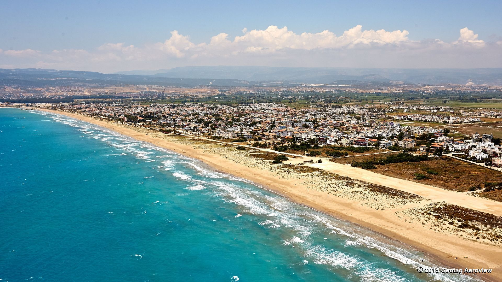

What it is
You travel to Silifke to meet and collect your pet in person, then travel home together.
Travel to Silifke, meet your pet in person, and return home together. This option offers a more personal adoption experience and gives you time to bond before travel.
Inquire About This Option
You travel to Silifke to meet and collect your pet in person, then travel home together.
It removes transport fees, gives you time to connect with your pet, and creates a more meaningful and personal adoption journey.
During your stay, you can spend time observing your pet, asking questions, and preparing for the journey home with guidance from our team.
Adopters who want a more hands-on and emotional adoption experience, and who are able to travel to meet their pet in person.
We look forward to potentially welcoming you to Silifke.
Contact Us